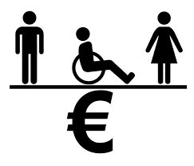
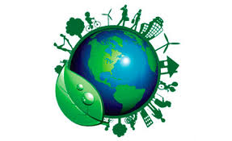
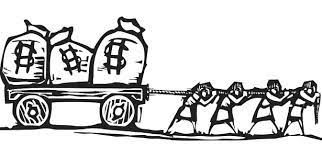
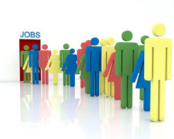
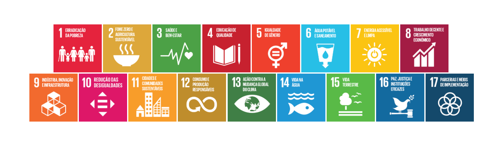

Compreendendo
O ODS 8, ou Objetivo de Desenvolvimento Sustentável número 8, faz parte de uma agenda global imposta pelas Nações Unidas para promover um futuro mais sustentável e inclusivo para todos. Este objetivo é conhecido como "Trabalho Decente e Crescimento Econômico" e abrange diversas áreas fundamentais para o progresso das sociedades em todo o mundo.
Em resumo, a ODS 8 busca criar um mundo onde o trabalho seja digno, o crescimento econômico seja sustentável e o acesso a serviços financeiros seja mais equitativo. Para atingir esses objetivos, é fundamental o envolvimento de governos, empresas, organizações da sociedade civil e cidadãos em todo o mundo, trabalhando juntos para construir um futuro mais próspero e justo para todos.
Ações
Promover o crescimento econômico sustentado, inclusivo e sustentável, emprego pleno e produtivo e trabalho decente para todas e todos
Ação 8.1
Crescimento Econômico
Ação 8.5
Emprego Pleno e Igualitário
Ação 8.9
Turismo Sustentavel
Ação 8.2
Avanço Tecnológico
Ação 8.6
Empregabilidade Jovem

Ação 8.10
Expansão dos setviços financeiros
Ação 8.3
Empreendedorismo
Ação 8.7
Eliminação do trabalho degradante
Ação 8a
Apoio ao comércio
Ação 8.4
Consumo Sustentável
Ação 8.8
Direitos Trabalhistas
Ação 8b
Pacto Mundial para o Emprego da Organização Internacional do Trabalho [OIT]
Agenda 2030
Veja o acompanhamento da implementação de políticas e ações do Governo Brasileiro que contribuem para o alcance das ODS até 2030
Sobre nós
Por que destacamos a ODS 8
O ODS 8 no Brasil é essencial para melhorar a qualidade de vida da população, não se limitando apenas ao crescimento do PIB, mas buscando um crescimento econômico inclusivo que beneficie toda a sociedade. Isso envolve a criação de empregos produtivos e decentes para reduzir a desigualdade e combater a pobreza, contribuindo para o desenvolvimento econômico equitativo, estabilidade social e bem-estar de todos os cidadãos.